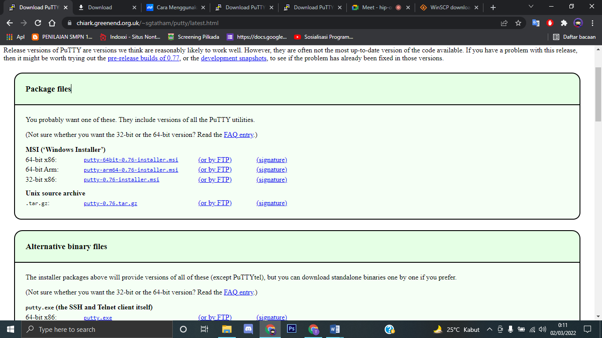
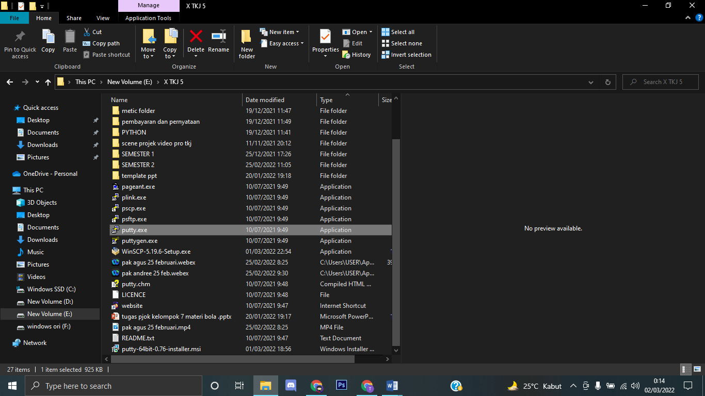
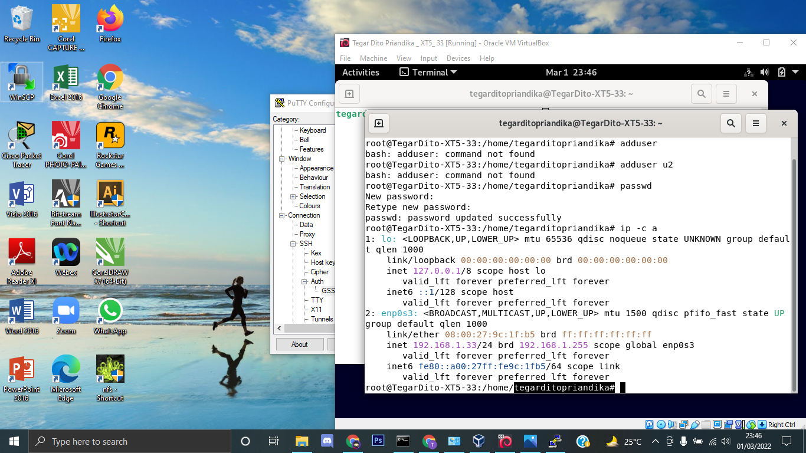
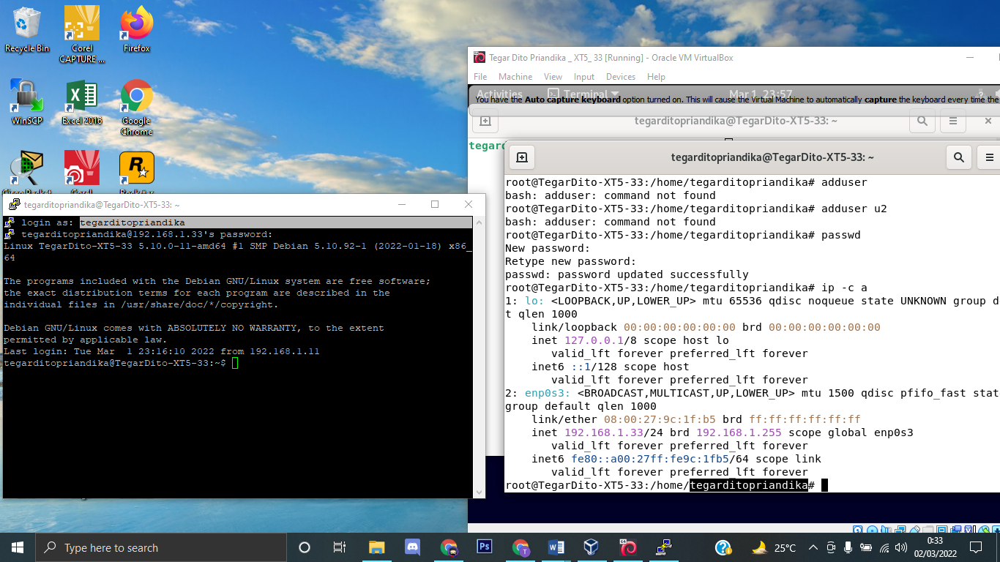
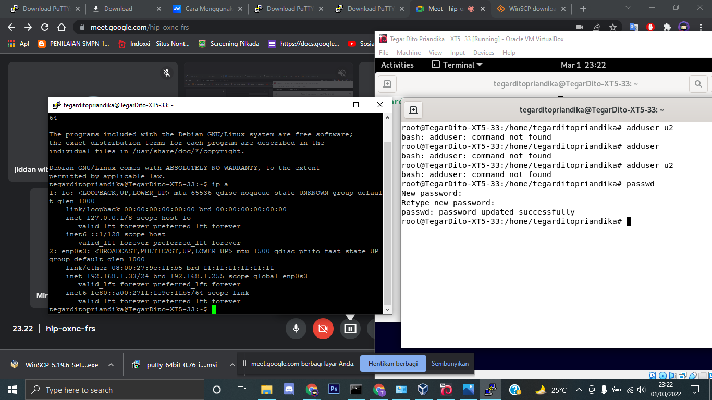

debian 11 Remote Server
Posted by Tegar Dito
Om Tegar- remote server adalah teknologi yang memungkinkan pengguna untuk mengakses sebuah server dan jaringan dari jarak jauh. Jadi meskipun tidak menggunakan jaringan LAN yang sama dengan server, pengguna server tetap bisa mengakses dan mengontrol server tanpa harus ke lokasi.
debian 11 Remote Server
Posted by Tegar Dito
Om Tegar- Linux Debian 11 Remote Server
sebelum masuk ke tutorial remote server debian 11, pastikan anda sudah mengikuti langkah langkah sebelum nya atau click disini jika di rasa kalian sudah mengikuti tutorial dengan baik. silahkan di coba untuk melakukan remote server.
Pertama silahkan install putty pada windows kalian, atau bisa click disini.
Pastikan anda Mendownload Putty sesuai dengan spesifikasi komputer kalian.
Lalu instalasi seperti biasa dan jalankan file putty.exe
Ip + Hostname
masuk pada terminal yang ada di debian lalu ketikan “su” untuk masuk ke root dan masukkan kode root , dan ketikan “ ip -c a ”
code
su
ip -c a
setelah itu masuk pada putty dan masukkan ip debian kalian.
running system putty
login menggunakan host name , cara gampang buat melihatnya kalian bisa melihat pada root debian tepatnya pada oktet setelah “ /home/………. ”. lalu password yang di minta adalah password untuk login debian
Tidak Perlu Khawatir karna password yang kita masukkan di putty memang invisible, jadi tidak usah panik.
setelah berhasil login silahkan ketikkan “ ip a ” pada putty. dan pastikan ip yang muncul adalah ip yang sama dengan yang muncul pada debian.
ip a
Cek Koneksi
buka command promt atau cmd bisa dengan shortcut “ windows + R ” lalu kita ketikkan “ ping (ip debian) ” untuk mengecek apakah server tersebut berjalan.
windows + R
ping 192.168.1.33
pastikan yang muncul pada command promt adalah reply from(ip) / reply from 192.168.1.33
Terimakasih untuk yang sudah mengikuti blog ini sampai akhir. untuk kelanjutanya adalah Virtual Hostdi debian atau kalian bisa click Virtual host silahkan tinggalkan komentar anda di contact jika mengalami kesulitan.